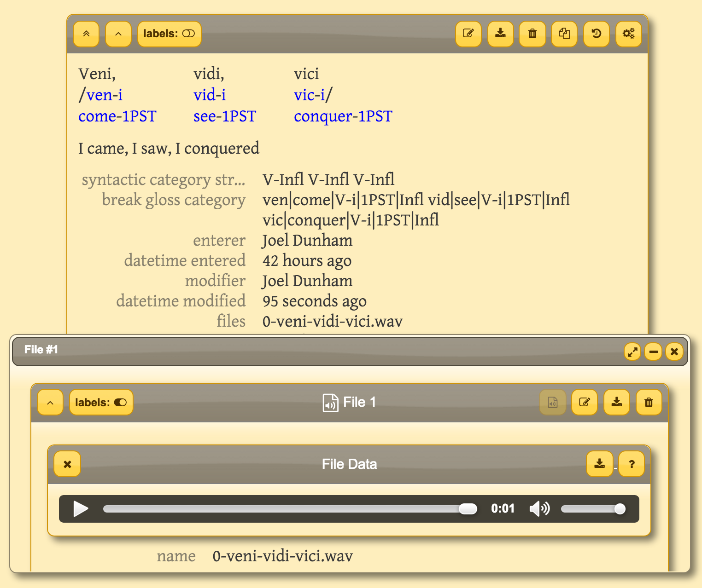

Dative
Dative is software for linguistic fieldwork.
Features
- Collaboration and data sharing
- Advanced and smart search
- Automatic morpheme cross-referencing
- Build morphological parsers and phonologies
- CSV import
- Text creation
- Media file (i.e., audio, video, image)-to-text association.
- User access control
- Documentation
- Open source
Screenshot
Getting Started
These screencasts will show you the basics of working with Dative: logging in, browsing forms and working with servers.
Overview
This screencast provides an overview of Dative, presenting its four major components (resources): 1) forms, 2) files, 3) collections and 4) corpora.
Logging In
This screencast shows you how to log in and out of servers (i.e., OLD web services) using Dative.
Browsing Forms
In this screencast, you will learn how to browse (linguistic) forms and other resources (e.g., tags or collections).
Working With Servers
This screencast shows how to work with server configurations; that is, how to specify which OLD web services you want to connect to.
Searching
This page will contain text, screenshots, and screencasts showing how to search over resources in Dative.
Adding & Updating Resources
This page will contain text, screenshots, and screencasts showing how to create and update resources in Dative.
Language-specific OLD Applications
The following seven languages are being collaboratively documented and analyzed using the OLD. These applications are accessible via any Dative user interface, including the one being served at www.dative.ca.
The following nine languages are being collaboratively documented and analyzed using OLD web applications running on version 0.2 of the software.*
- Blackfoot (bla)
- Okanagan (oka)
- Plains Cree (crk)
- Kwak'wala (kwk)
- Nata (ntk)
- Gitksan (git)
- Coeur d'Alene (crd)
- Shona (sna)
- Medumba
*Dative version 0.2 is a different piece of software from Dative (version 1). The above nine applications will be migrated to a Dative/OLD system using OLD v. 1 in the near future.
Frequently Asked Questions
show all hide all-
What is Dative?
Dative is an application for linguistic fieldwork and language documentation. It helps you to organize, share, and analyze your language data. Importantly, Dative does not contain its own database; rather, it is an interface for existing database applications. At present, Dative can provide an interface to Online Linguistic Database (OLD) web services.
-
How can I use Dative to document my language?
The easiest way to use Dative is to go to app.dative.ca, click the lock icon (), choose an existing (OLD) server, and enter your username and password for that server.
If you do not have access to an existing OLD server, you can request access to an existing one or create one yourself. Please contact me, if you would like to request access to an existing OLD or if you would like help with creating a new OLD.
Note that you can serve both Dative and the OLD on your own server, if you want. Dative is just a static web site containing HTML, JavaScript and CSS, so it is very easy to install and serve. The OLD is somewhat more difficult to install, so detailed instructions can be found on the OLD web site and in the Build OLD project.
-
Can I serve Dative on my own server?
Yes. Dative is an open source project and its source code can be found on GitHub. Assuming you have git, node and Bower installed, run the following commands (on a *nix system).
$ git clone https://github.com/jrwdunham/dative.git $ cd dative $ npm install $ bower install $ grunt build
Then copy the files in the dist/ directory to your server. For example:
rsync -avz dist/ myserveralias:dative/Is there a demo?Not quite yet. There is a “Demo OLD” that you can access from app.dative.ca. However, at this point, it is not yet publicly accessible. Check back soon.
Can I use Dative offline, i.e., in the field?Does it have documentation?Yes. The web site that you are currently visiting has some documentation and Dative itself has documentation built into it: go to app.dative.ca and click on the icon.
For documentation on the OLD, see the OLD web site and the OLD technical documentation.
Can I migrate my existing fieldwork data into Dative?Dative's import feature currently allows you to import CSV (i.e., comma-separated values) files. To access Dative's import interface, log in to an OLD in Dative, navigate to the Browse Forms interface, and click on the “upload to server” icon, i.e., . Note: since this functionality is currently under active development, you shold contact the administrator of the OLD that you are connecting to prior to using this feature on a database that already has data in it.
You can also upload your data programmatically to an OLD using its RESTful JSON API. For details on working with this API, see the OLD web site.
If your data are stored in a LingSync corpus, the LingSync-to-OLD migrator script may allow you to migrate your data.
Is it open source? How do I get the code?Yes, Dative is open source; its source code is available on GitHub.
Documentation
- The Official OLD documentation
- Dunham (2014) is a PhD dissertation that describes and argues for Dative. It was written by Dative's primary developer.
Dative exposes a RESTful API with data communicated in JSON format. A simple overview will be provided here soon. For now, see the documentation.